Cách cài đặt Python trên Windows, macOS, Linux
Cài đặt Python không khó. Dưới đây là hướng dẫn chi tiết
cách cài Python dành cho người mới bắt đầu.
Ở bài trước chúng ta đã biết sơ qua về
Python, ưu điểm và những lĩnh vực có thể sử dụng ngôn ngữ lập trình này. Để
bắt đầu làm quen với Python, trước tiên bạn cần cài đặt Python trên máy
tính đang dùng, có thể là Windows, macOS hoặc Linux.
Python là gì? Tại sao nên chọn Python?
Python là một ngôn ngữ lập trình đa nền tảng, có nghĩa là nó có thể chạy
trên nhiều nền tảng khác nhau và thậm chí đã được chuyển sang các máy ảo
Java và .NET. Nó là phần mềm mã nguồn mở và hoàn toàn miễn phí.
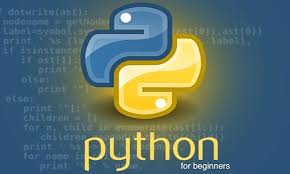
Mặc dù hầu hết các máy Linux và Mac ngày nay đều được cài đặt sẵn
Python, nhưng phiên bản này có thể đã lỗi thời. Vì vậy, bạn nên cài đặt
phiên bản mới nhất. Dưới đây là hướng dẫn cài đặt Python trên máy tính,
cụ thể cho từng hệ điều hành.
Cách dễ nhất để chạy Python
Cách dễ nhất để chạy Python là sử dụng Thonny IDE. Thonny IDE đi kèm với
phiên bản Python mới nhất được đóng gói trong đó. Vì vậy, bạn không cần
phải cài đặt Python một cách riêng biệt.
- Làm theo các bước sau để chạy Python trên máy tính:
- Tải xuống Thonny IDE.
- Chạy file cài đặt Thonny vừa tải về trên máy tính của bạn.
- Vào phần File > New, sau đó, lưu tệp với phần mở rộng là . py. Ví dụ:
hello.py, quantrimang.py...
- Bạn có thể đặt bất kỳ tên nào cho tệp miễn là phải kết thúc bằng . py.
- Viết mã Python vào tệp và lưu nó
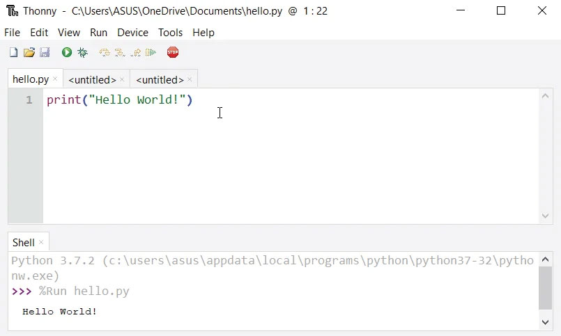
- Sau đó, đi tới phần Run > Run current script hoặc đơn giản hơn là nhấn
F5 để chạy file đó.
Cài đặt và chạy Python riêng biệt trên Windows
Bước 1: Tải Python tại đây:
https://www.python.org/downloads/, chọn phiên bản bạn cần, phiên bản mới nhất khi tôi viết bài viết này
là Python 3.10.6. Bước 2: Chạy tệp trình cài đặt và làm theo các
bước để cài đặt Python
Trong quá trình cài đặt, hãy chọn Add Python to environment
variables. Thao tác này sẽ thêm Python vào các biến môi trường và bạn có
thể chạy Python từ bất kỳ phần nào của máy tính.
Ngoài ra, bạn có thể chọn đường dẫn nơi Python sẽ được cài đặt.
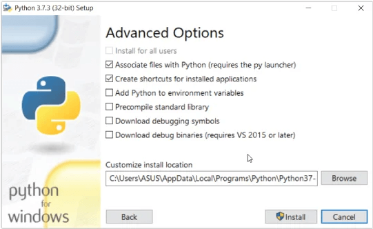
Sau khi hoàn tất quá trình cài đặt, bạn có thể chạy Python.
1. Chạy Python ở chế độ Ngay lập tức (Immediate mode)
Sau khi Python được cài đặt, chúng ta có thể nhập trực tiếp mã Python
vào cửa sổ dòng lệnh và nhấn Enter để nhận kết quả đầu ra ngay lập tức.
Hãy nhập lệnh sau vào cửa sổ lệnh:
python
Sau khi nhận được thông báo về phiên bản Python đã cài đặt, bạn có thể sử dụng nó như một máy tính. Hãy thử nhập:
1 + 1
Sau đó nhấn Enter để nhận kết quả. Nhấn Enter nếu bạn muốn thoát hoàn
toàn khỏi chế độ chờ lệnh của Python
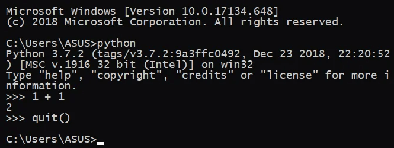
2. Chạy Python trong Môi trường IDE
Bạn có thể sử dụng bất kỳ phần mềm soạn thảo văn bản nào để viết kịch
bản Python, miễn là lưu nó với phần đuôi mở rộng là . py. Tuy vậy, sử
dụng IDE sẽ khiến việc viết code trở nên đơn giản hơn rất nhiều với các
tính năng hữu ích như gợi ý, đánh dấu, kiểm tra cú pháp hay trình quản
lý tệp... dành cho lập trình viên.
Cùng với việc cài đặt Python, một IDE có tên IDLE cũng được
cài đặt và bạn có thể sử dụng nó để chạy Python trên máy tính của mình.
Khi bạn mở IDLE, một giao diện Python Shell sẽ được mở.
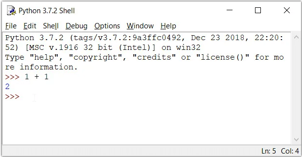
Để tạo file mới trong IDLE bạn nhấp vào File > New Windows hoặc
nhấn tổ hợp phím tắt Ctrl+N.
Sao chép đoạn code Python sau để thử trong file vừa tạo
print("Xin chào")
rồi nhấn Ctrl+S để lưu. File sẽ có đuôi là . py, đặt một cái tên
cho nó, chẳng hạn: quantrimang-python. py.
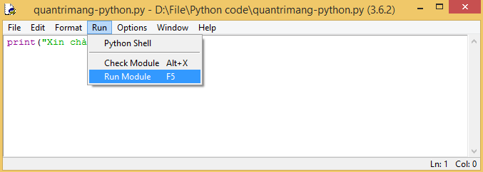
Nhấn Run > Run module hoặc F5 để xem kết quả.
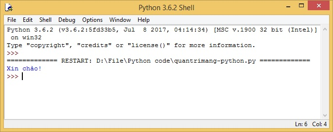
Đó, rất đơn giản và dễ dàng phải không nào. Bây giờ bạn đã chạy xong
chương trình Python đầu tiên rồi đó.
Cài đặt và chạy Python trên Ubuntu
Cài đặt các denpendency sau:
$ sudo apt-get install build-essential checkinstall
$ sudo
apt-get install libreadline-gplv2-dev libncursesw5-dev libssl-dev
libsqlite3-dev tk-dev libgdbm-dev libc6-dev libbz2-dev
Tải Python tại đây: https://www. python.org/downloads/source/
Trong terminal, đi đến thư mục chứa file tải về và chạy lệnh
sau để giải nén file. Tên file sẽ khác nhau tùy thuộc vào bản bạn tải
về.
$ tar -xvf Python-3.6.2.tgz
Đi đến thư mục đã giải nén, nhập lệnh:
$ cd Python-3.6.0
Thực hiện các lệnh sau để biên dịch mã nguồn Python trên Ubuntu.
$ ./configure
$ make
$ make install
Nếu là người dùng mới, bạn nên cài đặt Sublime Text trên máy để viết code Python trên Linux. Nhập lệnh sau để cài:
$ sudo add-apt-repository -y ppa:webupd8team/sublime-text-2
$
sudo apt-get update
$ sudo apt-get install sublime-text
Mở Sublime Text, vào File > New File hoặc nhấn Ctrl + N để
tạo một file mới.
Lưu file với tên tùy chọn, chẳng hạn quantrimang-python. py
Viết code và lưu nó:
print("Xin chào!")
Đi đến Tool > Build (Ctrl+B) bạn sẽ nhìn thấy kết quả của dòng
lệnh trên ở cuối cửa sổ Sublime Text.
Và như vậy, bạn vừa
chạy xong chương trình Python đầu tiên của mình trên Ubuntu.
Cài đặt và chạy Python trên macOS
Cài Python bằng trình cài đặt chính thức
Cách dễ nhất để tải xuống phiên bản Python mới nhất là thông qua trang
web chính thức. Đây là những gì bạn cần làm để bắt đầu:
1. Tải xuống gói trình cài đặt từ trang web chính thức của
Python (link ở đầu bài viết).
2. Chờ quá trình tải xuống hoàn tất. Sau khi hoàn tất, hãy nhấp đúp vào
gói để bắt đầu quá trình cài đặt. Bạn có thể làm theo hướng dẫn trên màn
hình trong trình cài đặt Python cho bước này.
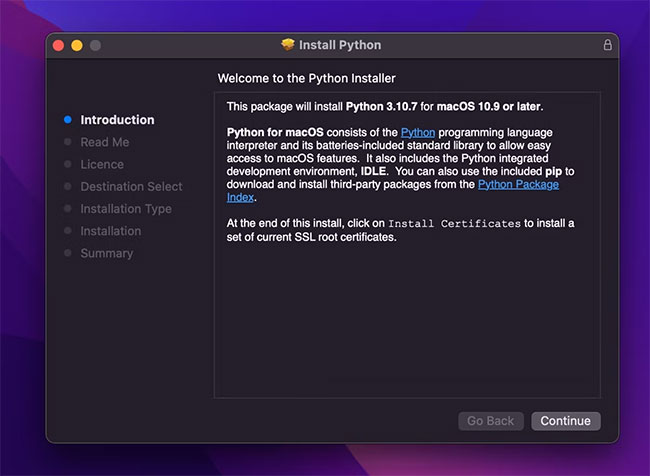
3. Sau khi cài đặt xong, trình cài đặt sẽ tự động mở thư mục cài đặt của
Python trong một cửa sổ Finder mới.
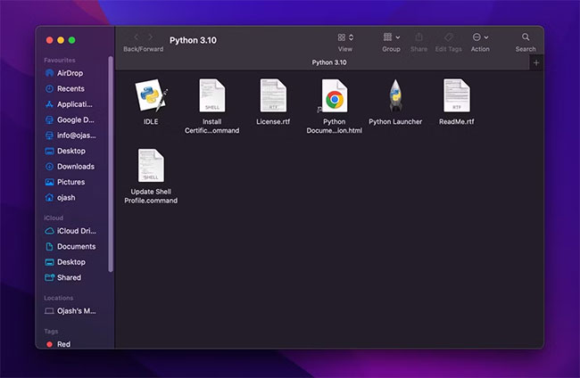
Xác nhận cài đặt Python
Bạn cần xác nhận rằng bạn đã cài đặt chính xác Python và IDLE, môi
trường phát triển tích hợp đi kèm với Python - chỉ là một trong nhiều
công cụ quan trọng đối với các nhà phát triển Python.
1.
Trong thư mục cài đặt của Python, bạn sẽ tìm thấy một file có tên IDLE.
Nhấp đúp vào nó để khởi chạy và nếu cài đặt thành công, IDLE sẽ mở một
shell Python.
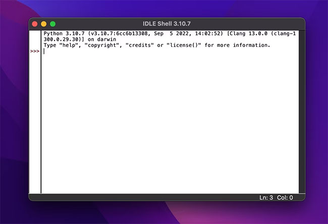
2. Để đảm bảo mọi thứ hoạt động trơn tru, hãy nhập một lệnh print Python đơn giản và chạy nó trong IDLE.
print("Hello, World!")
3. Nhấn phím Return (hoặc Enter) và bạn sẽ thấy thông điệp của mình được
in trên giao diện nếu mọi thứ hoạt động bình thường.
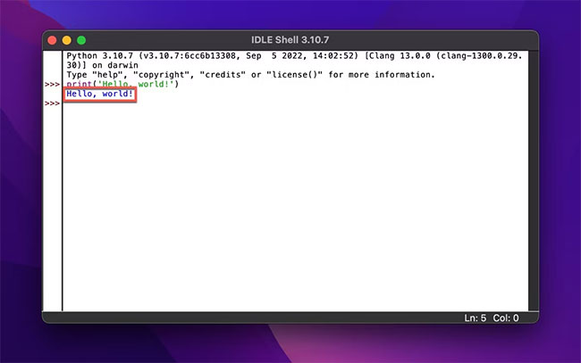
Cách cài đặt trình chỉnh sửa mã nguồn cho Python trên Mac
Bạn có thể bắt đầu code trong Python bằng dòng lệnh hoặc dùng một trình
chỉnh sửa code sẽ dễ hơn nhiều. Với trình chỉnh sửa này, bạn có thể dùng
highlight cú pháp, thu gọn code cùng các tính năng hoàn thiện code thông
minh.
Bạn có một số công cụ chỉnh sửa code cho MacOS. Tuyệt nhất
là Visual Studio Code (VS Code) của Microsoft. Nó hoàn toàn miễn phí cho
Mac.
Cách cài đặt VS Code trên Mac
1.Tải VS Code trên trang download chính thức của Microsoft.
2.Click Download Mac Universal.
3.Khi quá trình tải hoàn tất, VS Code sẽ tự giải nén từ file zip. Nếu
không, click đúp vào file zip.
4.Kéo VS Code vào thư mục ứng dụng.
Cách thiết lập VS Code để code trong Python
Trước khi có thể dùng VS Code để viết Python, bạn cần tạo một tập lệnh
và cài đặt phần mở rộng Python. Cách thực hiện như sau:
1.Mở VS Code từ thư mục ứng dụng.
2.Chọn New file trong cửa sổ Get Started.
3.Nhập tên của file trong hộp văn bản ở phía trên cùng của cửa sổ và
chọn định dạng là . py.
4.Click New file trong hộp văn bản, rồi chọn vị trí lưu nó. Sau đó,
click Create File.
Giờ bạn có thể click phần mở rộng Python mặc
định bằng cách click Install ở phía dưới cùng của cửa sổ. VS Code sẽ cài
đặt phần mở rộng Python, rồi bắt đầu viết tập lệnh Python.
Chạy tập lệnh Python đầu tiên trên Mac
Sau khi cài đặt thành công Python trên Mac và thiết lập một trình chỉnh
sửa code. Giờ là lúc bạn chạy tập lệnh Python đầu tiên ở nền tảng này.
Để làm việc đó, hãy làm theo hướng dẫn sau:
Quay lại file Python bạn vừa tạo và nhập bất kỳ lệnh Python
cơ bản. Ví dụ:
print("Hello, World!")
Bạn có thể biên soạn và chạy code bằng cách click nút Play ở góc phải
phía trên cùng của Visual Studio Code.
Nếu code được viết chính xác, bạn sẽ nhận được kết quả hiện trong
Terminal được tích hợp.
Điều đó có nghĩa bạn đã chạy thành công
tập lệnh Python đầu tiên.
Gỡ cài đặt Python trên Mac
Nếu đã từng thay đổi suy nghĩ về việc dùng Python trên Mac và lên kế hoạch chuyển sang một ngôn ngữ lập trình khác, bạn có thể làm theo các bước bên dưới để loại bỏ Python khỏi macOS.
Gỡ cài đặt Python khỏi thư mục Applications
1.Tới Finder > click thư mục Applications.
2.Di chuyển tất cả thư mục Python đã cài vào Trash. Để loại bỏ một phiên
bản, đảm bảo bạn chỉ di chuyển file của phiên bản đó vào Trash.
3.Một hộp thoại có thể xuất hiện, yêu cầu bạn cấp quyền để tiến hành
xóa. Nhập mật khẩu của Mac để cấp quyền Terminal loại bỏ những
file này.
Gỡ cài đặt framework Python từ thư mục /Library
Nếu muốn hoàn gỡ cài đặt hoàn tàn Python khỏi hệ thống, bạn cũng cần xóa
framework của nó từ danh mục /Library. Framework Python chứa trình biên
dịch Python, thư viện chuẩn và thư mục đóng gói trang.
Xóa bỏ framework Python sẽ loại tất cả những file này khỏi
hệ thống. Vì thế, nếu không loại bỏ chúng, Python vẫn sẽ được cài đặt
tên Mac nhưng không thể sử dụng.
1. Nhấn phím Cmd + Phím cách để
mở Spotlight Search. Tại đây, tìm Terminal và mở nó.
2. Nhập lệnh
sau trong Terminal và nhấn phím Return hoặc Enter.
sudo rm -rf /Library/Frameworks/Python.framework
3. Nhập mật khẩu của Mac để cấp quyền xóa file.
4. Hành động này sẽ xóa framework của tất cả phiên bản Python được cài
trên Mac.
Tuy nhiên, nếu chỉ muốn xóa framework của một phiên bản cụ thể (ví dụ
3.8), bạn có thể dùng lệnh sau:
sudo rm -rf /Library/Frameworks/Python.framework/Versions/3.8
5. Hành động trên sẽ xóa framework của phiên bản được chọn của Python
khỏi Mac.
Mặc dù có nhiều cách để cài đặt Python trên macOS, nhưng cách an toàn
nhất là sử dụng trình cài đặt chính thức. Tuy nhiên, bạn cũng có thể sử
dụng trình quản lý gói cho macOS như Homebrew - một ứng dụng giúp bạn dễ
dàng cài đặt và quản lý phần mềm, dependency và các script khác trên máy
tính của mình. Ưu điểm lớn nhất là bạn không chỉ có thể sử dụng Homebrew
để cài đặt bất kỳ phiên bản Python nào mà còn nhiều ứng dụng khác nữa.
Macs vẫn có bản cài đặt trước Python?
Suốt nhiều năm, Macs vẫn được cài đặt trước Python 2.7. Tuy nhiên, điều
này không còn nữa. Dù bạn vẫn có thể tải và cài Python trên Mac, giống
như bất kỳ phần mềm khác, Apple mặc định không còn bao gồm nó vì Python
2.7 không còn được duy trì.
Apple đã đưa ra thông báo loại bỏ phiên bản này khỏi hệ điều
hành ở ghi chú phát hành của macOS Catalina vào năm 2019 trước khi ngừng
macOS Monterey.
Như vậy, nếu phiên bản Mac nằm giữa 10.8 tới 12.3, cơ hội
tốt là bạn vẫn được cài trước Python 2.7 trên Mac. Cách tốt nhất để kiểm
tra việc này là cố gắn chạy Python từ app Terminal trong macOS.
Cách kiểm tra phiên bản đã cài trước của Python trên Mac
Nêu đang chạy một phiên bản macOS cũ hơn, bạn có thể kiểm tra phiên bản
của Python sẵn có trên Mac như sau:
1. Mở app Terminal trên Mac.
2. Nhập lệnh sau để kiểm tra phiên bản của Python 2.7 và nhấn nút
Return:
python --version
Nếu Python đã được cài trước, bạn sẽ nhận được phản hồi cugn cấp chi
tiết về phiên bản này.
Nếu Mac có nhiều phiên bản Python, bạn có thể nhập lệnh xác định
phiên bản Python: python --version. Đối với Python 3, bạn có thể dùng
lệnh sau:
python3 --version